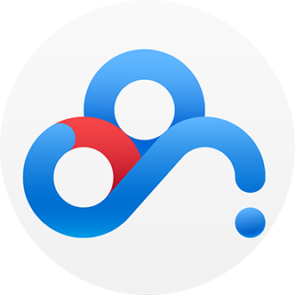

//rotate
var angle = 30;
touch.on('.target', 'touchstart', function(ev){
ev.startRotate();
ev.originEvent.preventDefault();
});
touch.on('.target', 'rotate', function(ev){
var totalAngle = angle + ev.rotation;
if(ev.fingerStatus === 'end'){
angle = angle + ev.rotation;
}
this.style.webkitTransform = 'rotate(' + totalAngle + 'deg)';
});